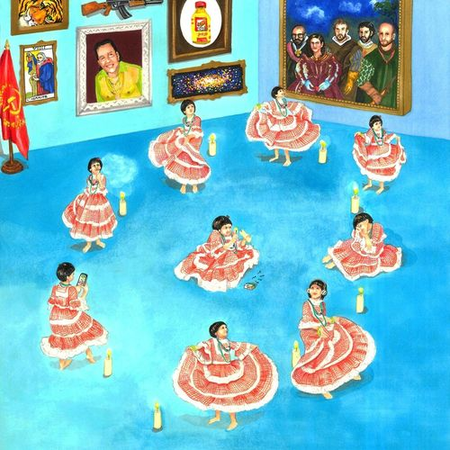
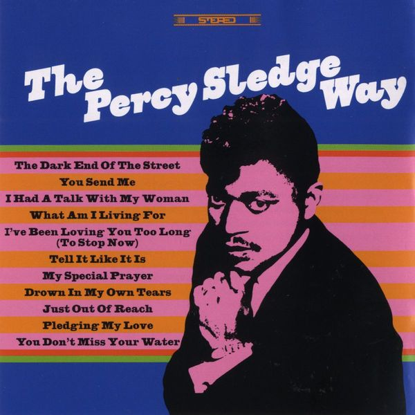
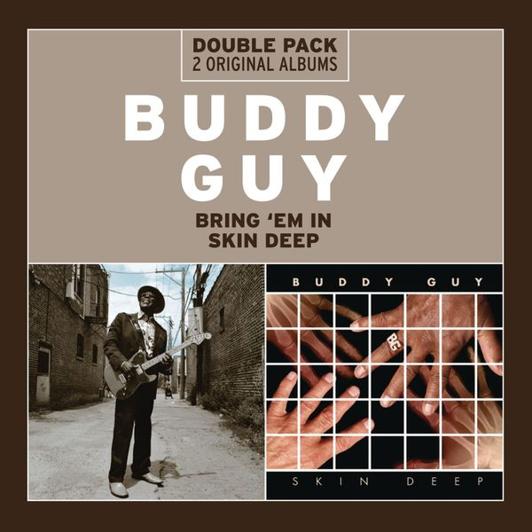
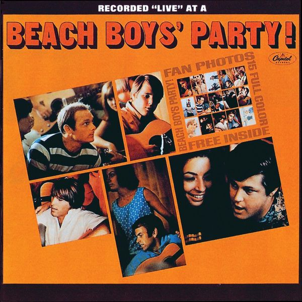
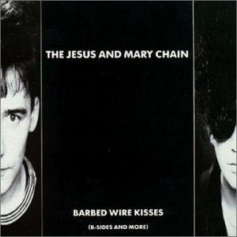
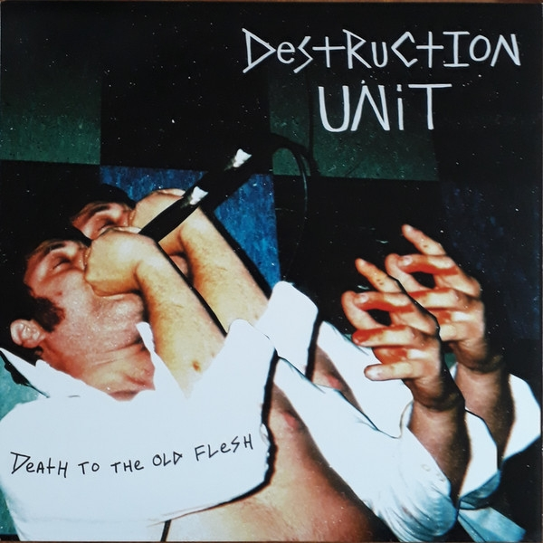
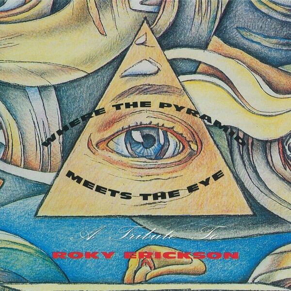
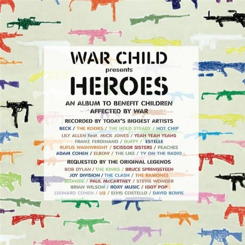
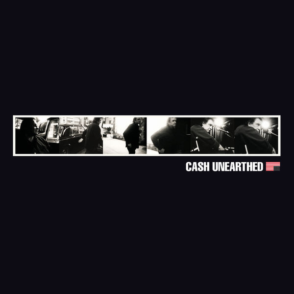
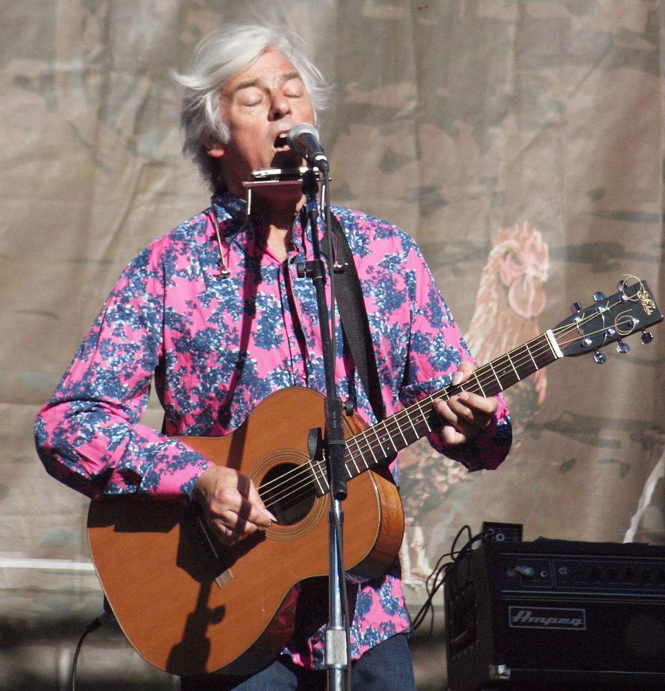

01
01
As Tears Go By
Nancy Sinatra – Boots (2021)
orig. The Rolling Stones / Marianne Faithfull

02Cumbia del Pichamán (son of a preacher man)
Meridian Brothers – Cumbia Siglo XXI (2020)
orig. Cher
 03
03
I Shall Be Released
Heptones – Unearthed Gold of Rocksteady Vol. 2 (2006)
orig. Bob Dylan
 04
04
I Say a Little Prayer
Aretha Franklin – Soul Queen (2007)
orig. Dionne Warwick
 05
05
Good Day Sunshine
Jimmy James & The Vagabonds – Sock It to 'Em J.J. - The Soul Years (2003)
orig. The Beatles
 06
06
Righteously
Anna Ash – Righteously (2017)
orig. Lucinda Williams

07Dark End of the Street
Percy Sledge – The Percy Sledge Way (2007)
orig. James Carr
 08
08
Summer Breeze
The Isley Brothers – The Essential Isley Brothers (2004)
orig. Seals & Crofts
 09
09
Ziggy Stardust
Bauhaus – Crackle - Best of Bauhaus (1998)
orig. David Bowie

10I've Got Dreams To Remember (feat. John Mayer)
Buddy Guy – Bring 'Em In/Skin Deep (2013)
orig. Otis Redding
 11
11
Day Tripper
Nancy Sinatra – Boots (2021)
orig. The Beatles
 12
12
Light My Fire
Africa – Music From “Lil Brown” (2014)
orig. The Doors

13You've Got To Hide Your Love Away
The Beach Boys – Beach Boys Party! (2012)
orig. The Beatles
 14
14
Just The Way You Are
Barry White – Barry White - The Collection (2014)
orig. Billy Joel
 15
15
How Can You Mend a Broken Heart?
Al Green – Al Green: Greatest Hits (2009)
orig. Bee Gees

16Surfin' USA (Summer Mix)
The Jesus and Mary Chain – The Killing Moon - Barbed Wire Kisses (1988)
orig. The Beach Boys

17Warm Leatherette
Destruction Unit – Death To The Old Flesh (2006)
orig. The Normal
 18
18
The Look Of Love
Dominique Dalcan – Trois Titres Acoustiques... (1992)
orig. Dusty Springfield

19You're Gonna Miss Me
Doug Sahm & Sons – Where The Pyramid Meets The Eye (A Tribute To Roky Erickson) (2010)
orig. Roky Erickson

20Sheena Is A Punk Rocker
Yeah Yeah Yeahs – War Child Presents Heroes (2009)
orig. Ramones
 21
21
S.O.S.
Levellers – Live BBC 1 (1991)
orig. Abba

22Redemption Song
Johnny Cash – Unearthed (2003)
orig. Bob Marley
 23
23
Into My Arms
Valerie June – Under Cover (2022)
orig. orig Nick Cave
 24
24
Diana
The Misfits – Project 1950 (2003)
orig. Paul Anka

25Kung Fu Fighting
Grant-Lee Phillips, Robyn Hitchcock – Live At IOTA Club, Arlington (2000)
orig. Carl Douglas